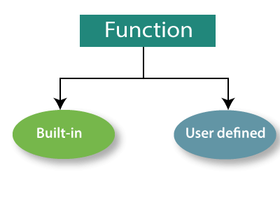
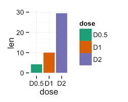

Functions in R
R has multiple options that are useful for the analysis of microbiome data.

Set up functions
Get or Set Working Directory
setwd(dir) is used to set the working directory to dir. dir would be consider the root folder.
Example: setwd("documents/project")
Install and load libraries
install.packages() Download and install packages from CRAN-like repositories or from local files. This function must be use once if the require package is not installed.
library() Load pre-install packages. This function must be use every time a new session starts
Load files functions
read.table()Reads a file in table format and creates a data frame from it, with cases corresponding to lines and variables to fields in the file.
read_tsv() and read_csv() are special cases of the more general read_delim(). They’re useful for reading the most common types of flat file data, comma separated values and tab separated values, respectively.
Arithmetic functions
mean()
sum()
sd()
max()
min()
ggplot functions
ggplot() initializes a ggplot object. It can be used to declare the input data frame for a graphic and to specify the set of plot aesthetics intended to be common throughout all subsequent layers unless specifically overridden.
geom functions
There are different functions to represent geometric figures or more specifically types of graphs. The most common type of figures are: geom_bar(), geom_boxplot(), geom_line(), geom_point(). You can check all types here ggplot2

Lets take barplots as examples. There are two types of bar charts: geom_bar() and geom_col(). geom_bar() makes the height of the bar proportional to the number of cases in each group (or if the weight aesthetic is supplied, the sum of the weights). If you want the heights of the bars to represent values in the data, use geom_col() instead.
Scale functions
There are different functions to represent the scales of the data in the plots using R. Those functions can be applied to the x or y axis. The most common type of scales are: scale_x_continuous(), scale_y_continuous(), scale_x_discrete(), scale_y_discrete(), scale_x_log10(), scale_y_log10().
The function scale_y_continuous() can be use to format the y-axis of a continuous variable. For example you can introduce breaks and limits.
labs() Modify axis, legend, and plot labels. Good labels are critical for making your plots accessible to a wider audience. Always ensure the axis and legend labels display the full variable name. Use the plot title and subtitle to explain the main findings. It’s common to use the caption to provide information about the data source. tag can be used for adding identification tags to differentiate between multiple plots.
Themes
Tidyverse functions
rename()
pivot_longer()
pivot_wider()
group_by()
summarize()
mutate()